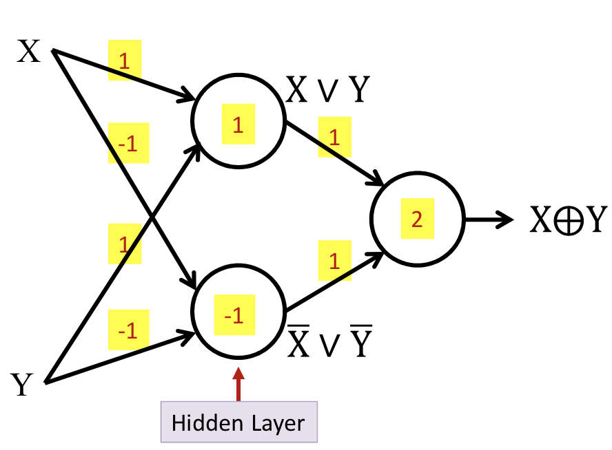

Preliminary
Perceptron
- Threshold unit
- “Fires” if the weighted sum of inputs exceeds a threshold
- Soft perceptron
- Using sigmoid function instead of a threshold at the output
- Activation: The function that acts on the weighted combination of inputs (and threshold)
- Affine combination
- Different from Linear combination: the result of mapping zero is not zero.
Multi-layer perceptron
- Depth
- Is the length of the longest path from a source to a sink
- Deep: Depth greater than 2
- Inputs/Outputs are real or Boolean stimuli
- What can this network compute?
Universal Boolean functions
- A perceptron can model any simple binary Boolean gate
- Using weight 1 or -1 to model function
- The universal AND gate:
- The universal OR gate:
- Cannot compute an XOR
- MLPs can compute the XOR

MLPs are universal Boolean functions
- Can compute any Boolean function
A Boolean function is just a truth table
- So expressed the result in disjunctive normal form, like
- In this case, need 5 neurons in the hidden layer.
Need for depth
A one-hidden-layer MLP is a Universal Boolean Function
- But the largest number of perceptrons is expontial:
How about depth?
- Will require perceptrons, linear in to express the same function
- Using associatable rules, can be arranged in layers
- eg. model

The challenge of depth
- Using only hidden layers will require neurons in the th layer, where
- A network with fewer than the minimum required number of neurons cannot model the function
Universal classifiers
- Composing complicated “decision” boundaries

- Using OR to create more decision boundaries
- Can compose arbitrarily complex decision boundaries
- Even using one-layer MLP
Need for depth
- A naïve one-hidden-layer neural network will required infinite hidden neurons
- Construct basic unit and add more layers to decrese #neurons
- The number of neurons required in a shallow network is potentially exponential in the dimensionality of the input
Universal approximators
- A one-layer MLP can model an arbitrary function of a single input
- MLPs can actually compose arbitrary functions in any number of dimensions
- Even without "activation"
- Activation
- A universal map from the entire domain of input values to the entire range of the output activation
Optimal depth and width
- Deeper networks will require far fewer neurons for the same approximation error
- Sufficiency of architecture
- Not all architectures can represent any function
- Continuous activation functions result in graded output at the layer
- To capture information "missed" by the lower layer
Width vs. Activations vs. Depth
- Narrow layers can still pass information to subsequent layers if the activation function is sufficiently graded
- But will require greater depth, to permit later layers to capture patterns
- Capacity of the network
- Information or Storage: how many patterns can it remember
- VC dimension: bounded by the square of the number of ..weights.. in the network
- Straight forward: largest number of disconnected convex regions it can represent
- A network with insufficient capacity cannot exactly model a function that requires a greater minimal number of convex hulls than the capacity of the network